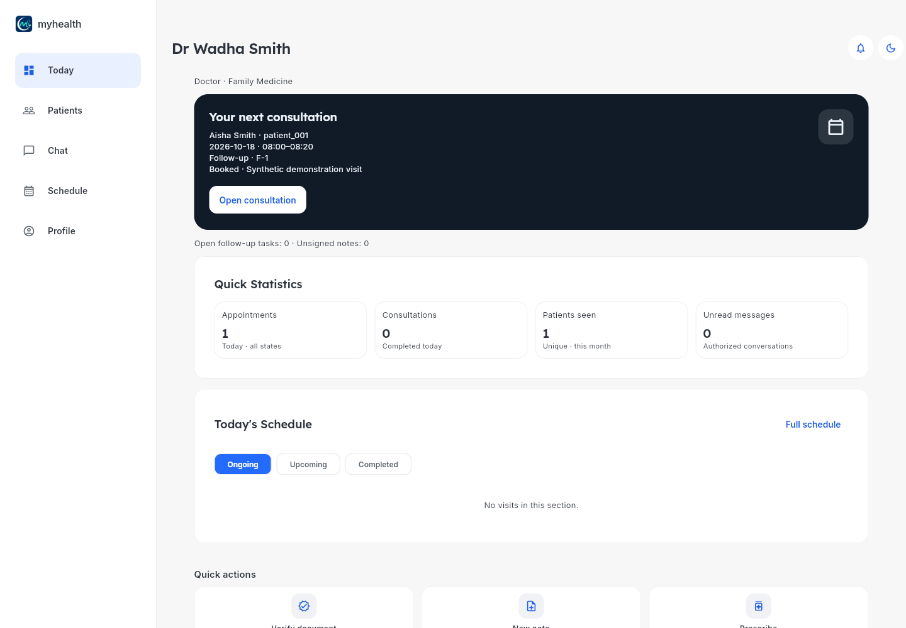

Doctors
Review charts, save consultation drafts, finalize notes, and issue medicine orders.
Patient tools, care-team workspaces, and clinic management — connected by clear roles and permissions.
From your next appointment to your last report, find the information you need without jumping between separate tools.
 Actual application · synthetic records
Actual application · synthetic recordsMove from the daily schedule to the patient chart, save consultation notes, and follow the work that needs your attention.

Actual application · synthetic recordsBring people, departments, appointments, requests, and operational activity into one management workspace.
 Actual application · synthetic records
Actual application · synthetic recordsSelected workflows are available for five staff roles. Each role sees the actions and information it is permitted to use.
Review charts, save consultation drafts, finalize notes, and issue medicine orders.
Record intake and observations, review relevant information, and follow assigned care work.
Find patients, manage bookings and check-in, and support clinic queues and document requests.
Review medicine queues, record dispensing, and manage stock in supported workflows.
Use the relevant schedule and patient record with selected dental chart and treatment workflows.
Explore the patient, care team, and clinic experiences.
Take a look inside